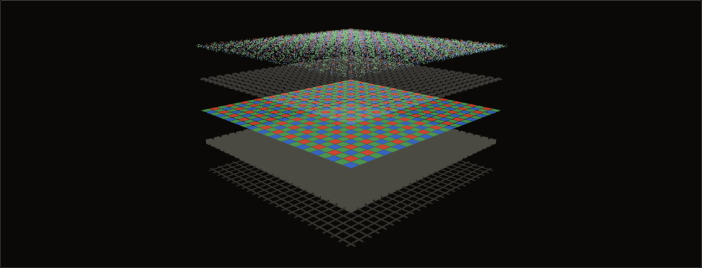
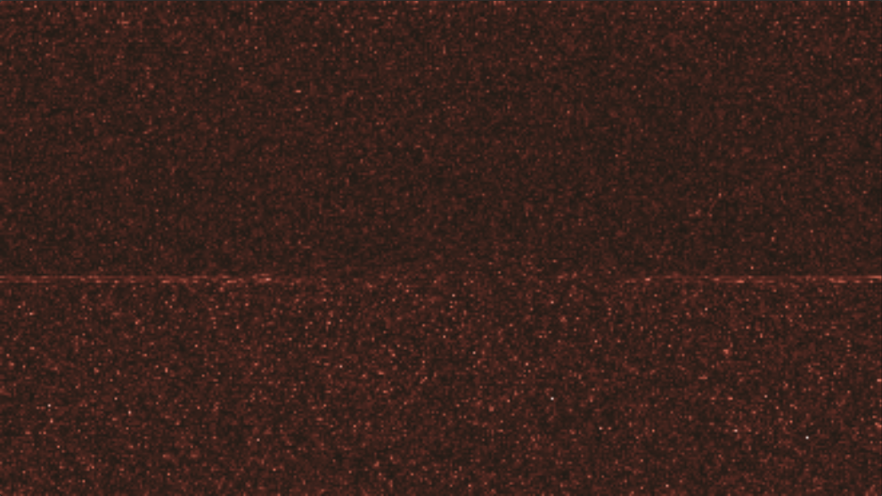
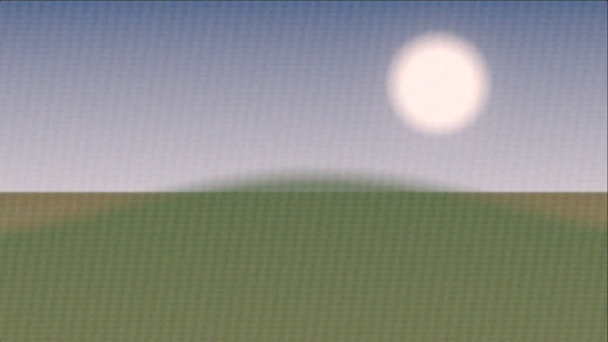

A sensor is a grid of tiny spots called sites. Each site sits under one colour filter, so it counts one colour only. 384 × 216 sites, 12 bit each, so every value runs from 0 to 4095.
Drag the divider above, or use the arrow keys. Click a pixel to see its numbers.
A pixel is the dot in the finished photo. Two of its three colour numbers were never measured — software guesses them.
The number on the right of the bar is the guess score. PSNR 41.5 dB says how close the guess lands to the real picture; higher is better. SNR 28.0 dB says how far the signal sits above the noise.

Start with one site. Light passes a microlens, which gathers it. Then a colour filter, which keeps one colour. Then a photodiode, which counts the electrons that land. Then a circuit, which reads the count.
Each site has one filter, so it records one colour. The filters repeat every two sites: red, green, green, blue. Half of them are green, because your eye reads green detail best.
A red site never records green or blue. Those two numbers aren't stored somewhere else in the file — they were never there.
So the camera fills each missing colour from the neighbours it does have. That's a guess. A red or blue site has no green reading, and its two green neighbours — one along the row, one down the column — are all the evidence there is.
Every method does this at every site, then repeats it for red and blue. They all do the same job — demosaicing, which just means filling in the missing colours. They differ in which neighbours they trust.
| Method | PSNR | Colour error |
|---|---|---|
| Nearest neighbour | 36.98 dB | 2.98 |
| Bilinear | 41.26 dB | 2.01 |
| Hamilton–Adams | 41.54 dB | 1.30 |
| Malvar–He–Cutler | 41.65 dB | 1.40 |
Hamilton–Adams: 41.54 dB on this frame. Highest wins; the bars are ranked, not absolute.

Error map, in levels · 0 to 13 · mean 1.65
Row 108, column 192 · Hamilton–Adams
This site counted red only: 1282. The camera guessed green (1582) and blue (1672). The values are levels, written DN. One level is one step on a scale that runs from 0 to 4095.
The row changes less, so the row pair is used. Change along the row 160. Change down the column 408.
Green, plus the average colour difference from four diagonal neighbours.
Those numbers aren't a picture yet. Printing is how they become one. Expose freezes the frame; the measurements don't change.

Each treatment stands in for a real choice of paper, toner or developer strength. Only the print changes, not the photo.